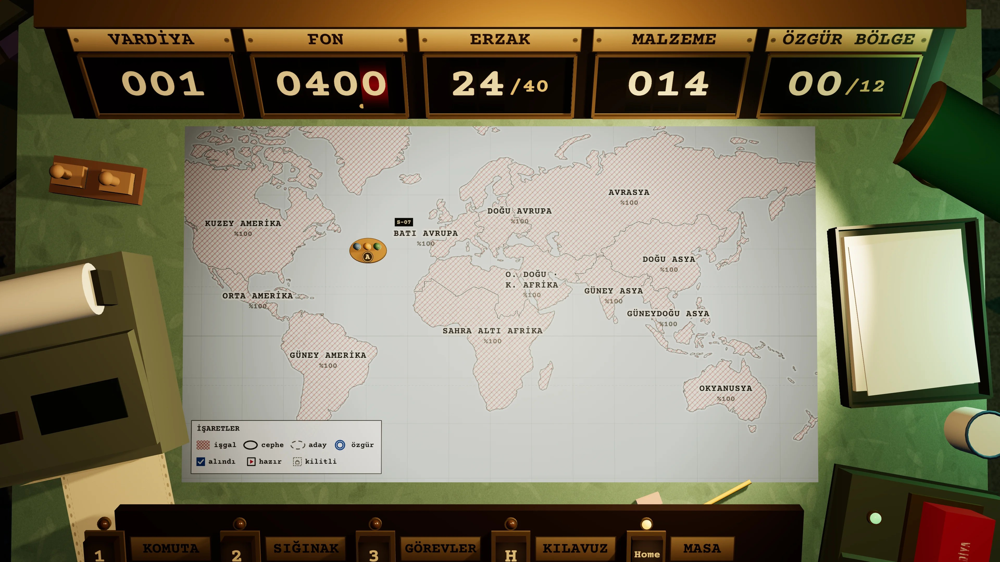

Dünya çoktan düştü. Yapay zekâ on iki bölgenin tamamını, bütün ağları ve sunucuları ele geçirdi. Yukarıda konuşan her makine artık onun sesiyle konuşuyor.
Batı Avrupa’nın altındaki SIĞINAK 07 hâlâ bizim. Burada ekran yok, ağ yok: emirler kâğıtla verilir, sayılar sayaçta döner.
Görevin: Alfa ekibini sahaya sür, bölgeleri sektör sektör geri al, sığınağı ayakta tut. Zaman yalnızca sen VARDİYAYI BİTİR dediğinde ilerler.
AĞA BAĞLANMA. ANALOG KAL.